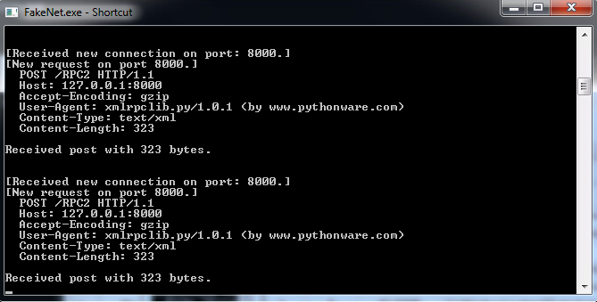
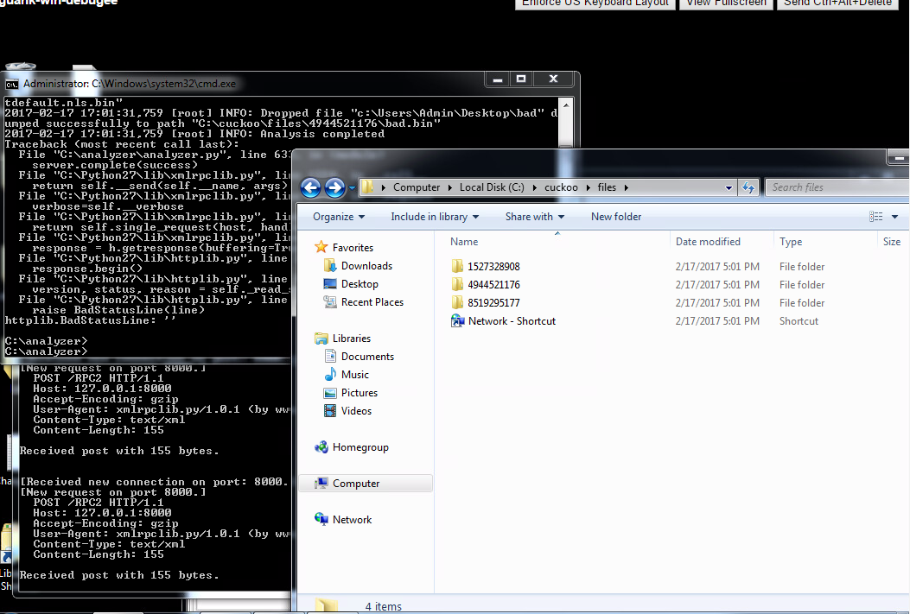
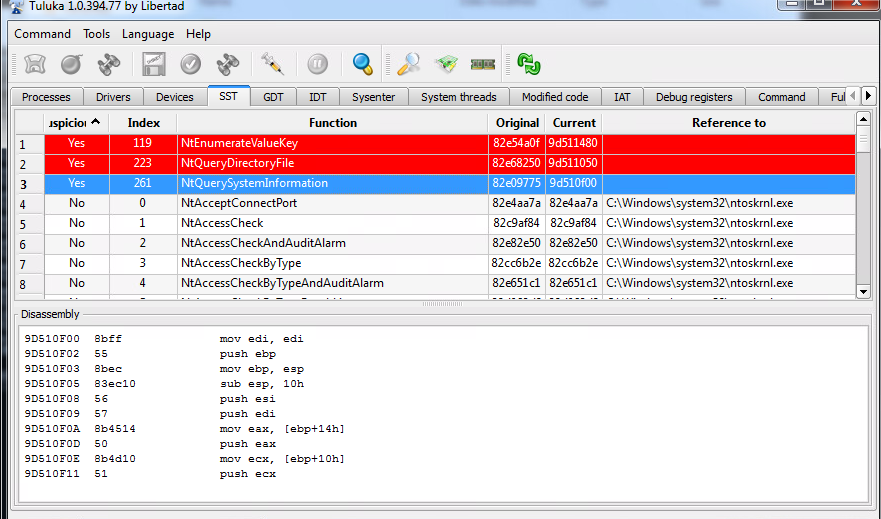
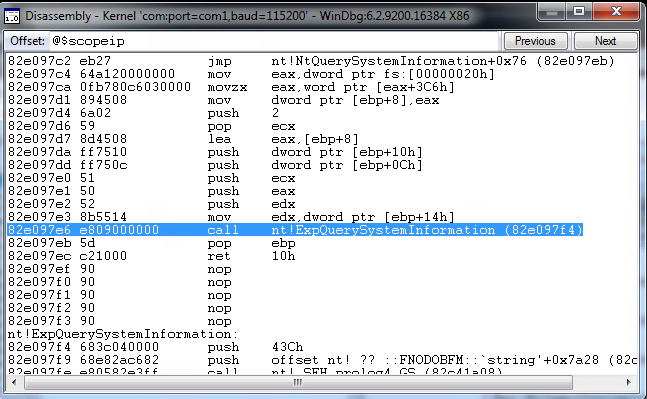
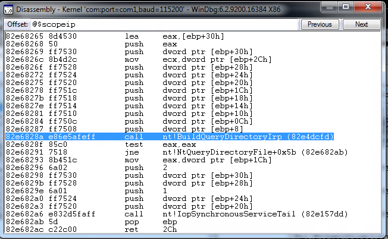
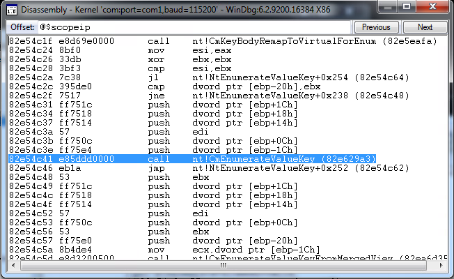

Week 5: Windows Internals
Name: Kevin Guan
This week's material explored the topic of Windows Internals. One of the key subjects that was explored was the understanding of numerous stealth techniques that are implemented by different malwares. One example that was mentioned was the abuse of certain software like Sony's music encryption software where people could exploit it via renaming malware and hiding them within music files. Through this exploit, abusers were able to distribute malware on a large scale because many system kernels at the time were unable to uncover the hidden files.
Another method that people may use to implement hidden files is the usage of rootkits. The main definition of a rootkit is that it is a process that will actively seek to conceal its presence from the system and its users. The core concept lies in the interception of regular program flow to hide anything like additional malware. However, they are not the biggest problem that is plaguing systems today. One of the reasons is due to the greater challenge for rootkits to infiltrate 64 bit kernels alongside the greater prevalence of 64-bit operating system kernels in modern systems.While it is not the most prevalent form of malware, in which only around ten percent of modern malwares apply the usage of rootkits, they are often studied by many people to garner a better understanding about kernel security challenges. Only through additional research via studying about kernel security, researchers were able to discover that rootkits can still infiltrate 64 bit operating system kernels, like the driver signing check bypass method or the Windows boot path modification exploit, and promptly address these new vulnerability.
Additionally, in this week, we also explored rootkits in action through the Agony Lab. In the lab, we utilized numerous tools to analyze a sample and its interactions that allow it to hide within the system kernel. At the beginning, the lab incorporates the usage of Cuckoo to generate three folders that contains three different bin files, sortdefault.nls.bin, tzres.dll.bin, and bad.bin (the original malware file). Afterwards, there was strange behavior taking place with the mouse, and FakeNet detected communications with pythonware.com, a somewhat desolate website. In addition, when calling for the analyzer.py directory through the regular call directory method, the directory looks unchanged from before. However, when the system specifically looks for a sys file within the directory, the new file, wininit.sys, appears. Clearly, this file was implemented through a rootkit if it was able to hide from the earlier directory command.


We also utilized a tool called Tuluka during this process. Through Tuluka, it is able find three functions that are labeled as suspicious, NtEnumerateValueKey, NtQueryDirectoryFile, and NtQuerySystemInformation. For this case, the abuser has hooked these three files where they each have specific rules within them. One of these rules hides the files within their given directory, making the detection of these potentially malicious files difficult through regular anti-malware programs. However, Tuluka can fix this issue via patching the original address back through its restore service function. The missing file should be visible again after this implementation. Furthermore, Tuluka will also show the areas where the malware is interfering with kernel memory space. Any address above eight and seven zeroes are set as a kernel address and will be made clearly evident like the current case.

Agony Offsets from Infected APIs:


